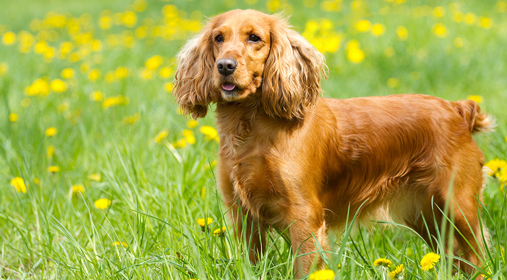

| דף ראשי | גזעים | מחלות | רקעים ותמונות | סקר | צרו קשר |
|---|
| קוקר ספאנייל |
| סמוייד |
| שפיץ יפני |
| פומרניאן |
| פודל |
| דני ענק |
| דלמטי |
| רועה גרמני |
| רועה קווקזי |
| רועה בלגי |
| בולדוג אמריקאי |
| בולדוג צרפתי |
| בולדוג אנגלי |
| צ'או צ'או |
| שיצ'ו |
| אמסטף |
| פינצ'ר |
| רוטווילר |
| דוברמן |
| האסקי סיבירי |
קוקר ספאנייל
מידע נוסף
הקוקר ספנייל הוא כלב חרוץ שאוהב לעבוד אך עם זאת הוא נחשב לחיית המחמד האולטימטיבית שכן הוא מכבד את סמכות בעליו תמיד, ללא תנאים ודיי בקלות. הקוקרים הם לא כלבים טיפשים אך גם לא מבריקים במיוחד והם זקוקים להכוונה סבלנית על ידי הבעלים שלהם לגבי מה אסור ומה מותר. סך הכל, הספנייל תמיד מחפש ללמוד ולרצות והוא מושלם עם ילדים ומשפחה, למרות שכלבים אלו לפעמים מעט ביישנים ליד אנשים לא מוכרים.
מקור הגזע והיסטוריה
הקוקר ספנייל הפופולארי החל את דרכו בבריטניה בתור עוזר לציד ציפורים וחיות קטנות. על פי המקור מאנגליה, פותח הקוקר ספנייל האמריקאי ומשם הופץ לישראל ושאר העולם. השם "קוקר" הגיע מהנקר (וודקוק), ציפור ספציפית אותה הספנייל נהג לצוד הכי טוב. כיום, רוב גדול מהקוקרים פרשו מהציד והם מתפקדים לרוב ככלבי משפחה וכלבי ראווה ותחרויות.
נתונים ומאפיינים
כלב מקסים בעל מבנה גוף קטן, ראש עגול, פרווה נעימה כמשי שאורכה בינוני ואוזניים ארוכות ונפולות שמכסות חצי מפניו. המראה החמוד והתמים של הקוקר ספנייל משדר רק קמצוץ מטוב הלב והלך הרוח הנעים של הכלב הזה. עדין, בוטח ובעל אינטליגנציה ממוצעת, הקוקר אוהב את כולם וצריך להבין שמעמדו עומד מתחת לבני אדם, אחרת הוא עלול לפתח בעיות התנהגות. הגובה הממוצע של הקוקר ספנייל עומד על כ-38 ס"מ ומשקלו הממוצע נע בין 7 ל-14 ק"ג.
מחלות נפוצות וטיפול
הבעיות העיקריות שמשפיעות על הקוקרים הן גלאוקומה, בעיות עיניים כגון התעוורות ומחלות רגליים וברכיים שונות. כמו כן, רגיש הגזע להיפ-דיספלסיה (מחלת ירכיים), אלרגיות עור שונות, בעיות בשפתיים ומחלות בכבד. הקוקר הוא מסוג הכלבים שיהיו בריאים במשך 10 שנים ועלולים לחלות במחלות מסוכנות ולעתים קטלניות תוך ימים ספורים. יש לבקר אצל הווטרינר באופן קבוע. תוחלת החיים הממוצעת של הקוקר ספנייל נעה בין 12 ל-15 שנים.
